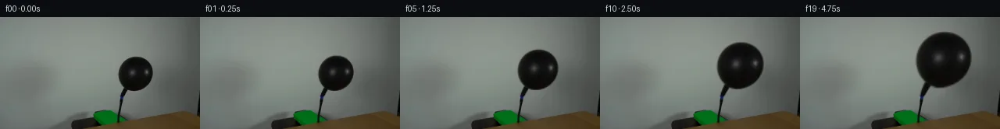

![首帧]()

Round 00
2026-11-04T23:11:29.115764+00:00像素候选变化代码 +177/−0inspection 更新
pixels 8d4c90146c483614 · code efaca6b2dc6dafe1
查看本轮 generate.py 真实 diff
--- previous/generate.py
+++ current/generate.py
@@ -0,0 +1,177 @@
+"""Deterministic, local source-pixel deformation for the balloon inflation task."""
+from pathlib import Path
+import json
+import numpy as np
+from PIL import Image, ImageDraw
+from scipy import ndimage, sparse
+from scipy.sparse.linalg import spsolve
+from artifact_io import save
+
+ROOT = Path(__file__).resolve().parent
+SCALES = np.array([1.000, 1.025, 1.058, 1.096, 1.135, 1.173, 1.211,
+ 1.247, 1.282, 1.316, 1.349, 1.381, 1.412, 1.442,
+ 1.470, 1.498, 1.525, 1.551, 1.577, 1.602])
+ANCHOR_X, ANCHOR_Y = 156.0, 103.0
+
+
+def harmonic_background(rgb, hole):
+ """Solve discrete Laplace equations using only the source wall boundary."""
+ ys, xs = np.nonzero(hole)
+ index = np.full(hole.shape, -1, np.int32)
+ index[ys, xs] = np.arange(len(ys))
+ rows, cols, vals = [], [], []
+ rhs = np.zeros((len(ys), 3), float)
+ for k, (y, x) in enumerate(zip(ys, xs)):
+ rows.append(k); cols.append(k); vals.append(4.0)
+ for dy, dx in ((-1, 0), (1, 0), (0, -1), (0, 1)):
+ ny, nx = y + dy, x + dx
+ j = index[ny, nx]
+ if j >= 0:
+ rows.append(k); cols.append(j); vals.append(-1.0)
+ else:
+ rhs[k] += rgb[ny, nx]
+ matrix = sparse.csr_matrix((vals, (rows, cols)), shape=(len(ys), len(ys)))
+ clean = rgb.copy()
+ clean[ys, xs] = spsolve(matrix, rhs)
+ return clean
+
+
+def extract_balloon(rgb):
+ """Color matting around the source silhouette, keeping source highlights."""
+ yy, xx = np.indices(rgb.shape[:2])
+ region = (xx >= 149) & (xx <= 198) & (yy >= 48) & (yy <= 103)
+ dark = region & (rgb.max(axis=2) < 82)
+ # The rounded body and its neck form one connected source component.
+ labels, n = ndimage.label(dark)
+ body_label = labels[73, 174]
+ dark = labels == body_label
+ support = ndimage.binary_dilation(dark, iterations=2) & region
+ background = harmonic_background(rgb, support)
+ distance = ndimage.distance_transform_edt(dark)
+ interior = distance >= 2.0
+ _, nearest = ndimage.distance_transform_edt(~interior, return_indices=True)
+ edge_fg = rgb[nearest[0], nearest[1]]
+ # Solve edge coverage from local source foreground and reconstructed wall.
+ b = background.mean(axis=2)
+ f = edge_fg.mean(axis=2)
+ y = rgb.mean(axis=2)
+ alpha = np.clip((b-y)/np.maximum(b-f, 15.0), 0.0, 1.0)
+ alpha[interior] = 1.0
+ alpha[~support] = 0.0
+ # Prevent weak numerical matte residues on the outside wall.
+ alpha[alpha < 0.015] = 0.0
+ # Exact source reconstruction is retained in premultiplied space.
+ premultiplied = rgb - background * (1.0-alpha[..., None])
+ premultiplied[alpha == 0] = 0.0
+ return alpha, premultiplied, background, support
+
+
+def source_coordinates(scale, xx, yy):
+ # A monotonic 1D map gives an exact inverse of the vertical neck deformation.
+ source_y = np.linspace(-10, 145, 15501)
+ ramp = np.clip((ANCHOR_Y-source_y)/12.0, 0.0, 1.0)
+ ramp = ramp*ramp*(3.0-2.0*ramp)
+ stretch = 1.0+(scale-1.0)*ramp
+ target_y = ANCHOR_Y+(source_y-ANCHOR_Y)*stretch
+ assert np.all(np.diff(target_y) > 0)
+ sy = np.interp(yy, target_y, source_y)
+ ramp_y = np.clip((ANCHOR_Y-sy)/12.0, 0.0, 1.0)
+ ramp_y = ramp_y*ramp_y*(3.0-2.0*ramp_y)
+ local_scale = 1.0+(scale-1.0)*ramp_y
+ sx = ANCHOR_X+(xx-ANCHOR_X)/local_scale
+ return np.array([sy, sx])
+
+
+def generate():
+ original = np.asarray(Image.open(ROOT/'first_frame.png').convert('RGB'))
+ assert original.shape == (144, 256, 3)
… diff truncated; 90 more lines …